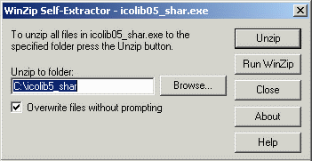
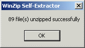
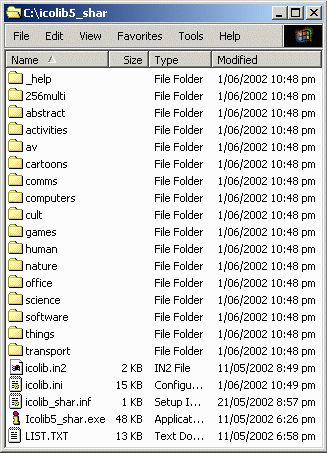

Once you have obtained a copy of Icon Library you should check
that it is the correct version by looking at its name and filesize.
The name of the file is icolib05.exe (2884KB) for the
unregistered version and icolib05_reg.exe (5833KB) for the
full registered version.
Place the downloaded Icon Library file into a temporary folder
such as C:\temp.
Double click the file to start the installation procedure. You
should see this window appear. This example assumes that you are
installing the shareware version of Icon Library. The full
registered version is installed in a similar manner.

You can change the default location of where the program will
be installed by typing a new pathname in the Unzip to folder
window or by selecting a folder using the Browse... button.
Extract all the Icon Library files by clicking on the
Unzip button. A progress bar will appear showing all the
files being extracted. When the process is complete, a confirmation
window will appear showing the number of files that have been
extracted. There are currently 169 files in the shareware
version and 410 files in the full registered version of
Icon Library, although there may be slight variations in future.

Click on the OK button to close this window and then
click on the Close button in the previous window. You should
now have a folder called icolib5_shar on your C: drive with
contents similar to what is shown below. I have shown the detailed
Windows Explorer view. Some files, such as icolib.in2, only
appear in the shareware version of Icon Library.

The basic installation is now complete. You can start using
Icon Library by double-clicking on the file with the icon that looks
like the letter i with the red dot. The program is called
Icolib5_shar.exe or Icolib5_shar if you have not
enabled file extensions. There is a
User Guide available for the
Icon Viewer program.
You may also like to continue the installation by creating
some Shortcuts for your
desktop.